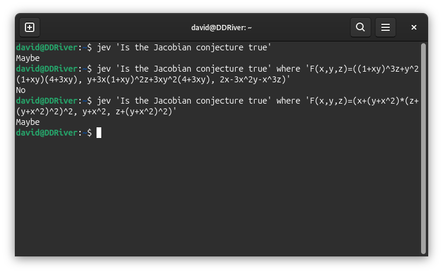

Jev Can Detect Counterexamples To The Jacobian Conjecture.
Update: Jev Can Not Detect Counterexamples To The Jacobian Conjecture.
Ask Jevs
Having obtained a TypeSafe API key, I built (among other things) a little command-line wrapper around Jev. It prints Yes, No or Maybe, and its where option adds context to the state sent with the question. Playing around with it, I asked whether the Jacobian conjecture was true. It said Maybe.
Then I supplied the Alpöge counterexample as context: just the polynomial formula, with no label saying what it was. Jev said No. I tried a polynomial bijection instead, and it went back to Maybe. The question had stayed the same. I was like, holy shit.

I tried each case a few more times. The bare question returned Maybe three times out of three, the counterexample returned No three times out of three, and the bijection returned Maybe twice and No once. Jev's wrapper puts its probability for Yes into three bands: No below one third, Maybe from one third to below two thirds, and Yes above that. “Maybe” is the wrapper's middle band, not a separate word Jev generates.
Three calls per case were intriguing, but nowhere near enough to tell whether this was an ability Jev actually had. I asked Codex to script up an experiment with many more maps and measure the No/Maybe pattern.
The first 500 maps
Codex generated 250 variants of the same certified noninjective construction and 250 bijections made from polynomial shears. The script checked the Jacobian and a collision for the former, and the Jacobian and an explicit inverse for the latter. These were related generated variants, not 250 independent counterexample discoveries. We shuffled the cases and supplied only each formula as context.
I scored the response pattern I had seen in the small trial: No beside a counterexample and Maybe beside a bijection. Jev gave No on 198 of 250 counterexamples and Maybe on 222 of 250 bijections. That made 420 of 500, or 84.0%, matching the pattern. The remaining counterexample responses were 52 Maybe; the remaining bijection responses were 28 No. There were no Yes responses.
That split looks like Jev is sensitive to the mathematical difference between the two families. It is an appealingly strange result: I asked a global conjecture question, not “Is this map injective?”, yet the answer changed with the example sitting beside it. I kept the 500 saved prompts and responses, along with the earlier exploratory calls.
What the number says
The 84.0% scores the response pattern I was looking for: No beside a counterexample, Maybe beside a bijection. It is not the literal accuracy of answering the unchanged global question. Nor can I tell from the answers whether Jev checked any of the algebra. Each map got one call in the larger run, so the counts describe this run rather than how reliably it would answer on a particular map.
Something about putting a formula beside the question appears to shift Jev's answer. I want to know what it is picking up on. For now I have a result I did not expect when I wrote that little CLI.
□